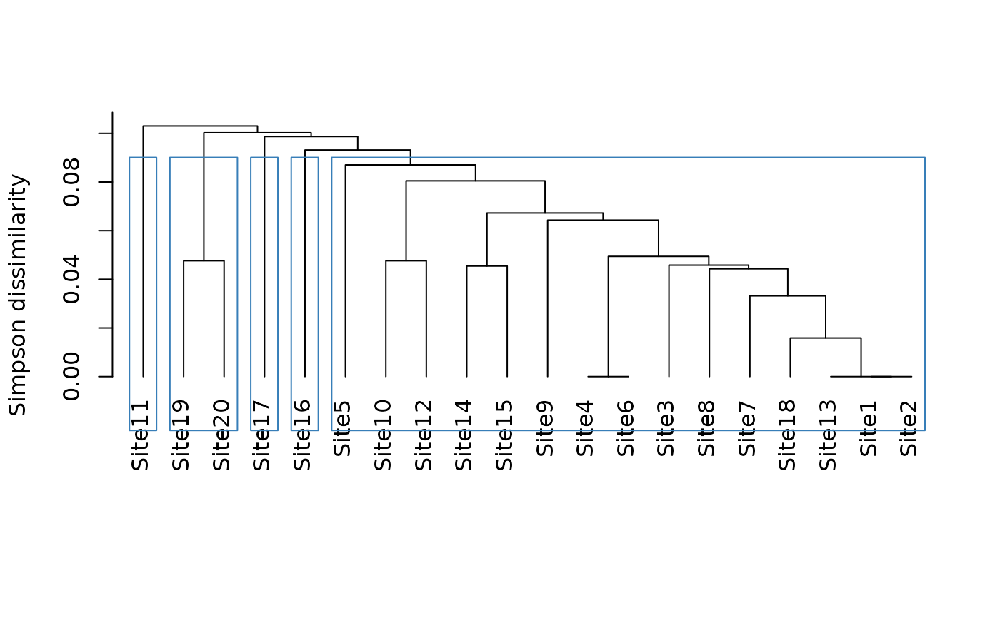
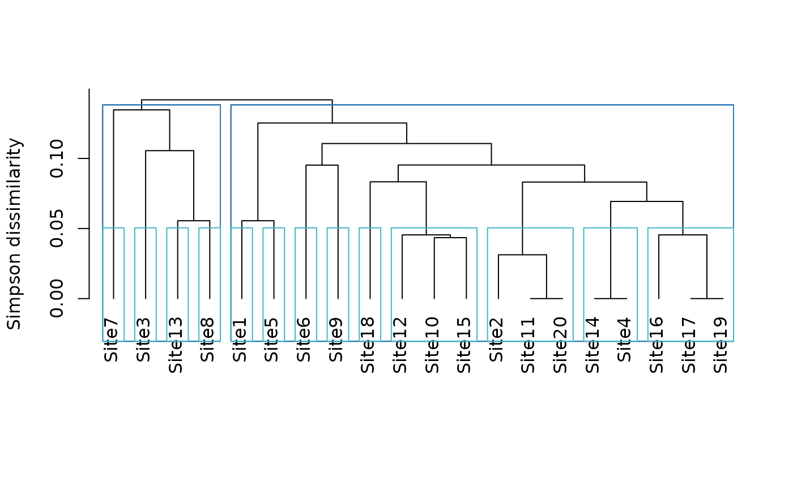

Hierarchical clustering based on dissimilarity or beta-diversity
Source:R/hclu_hierarclust.R
hclu_hierarclust.RdThis function generates a hierarchical tree from a dissimilarity
(beta-diversity) data.frame, calculates the cophenetic correlation
coefficient, and can get clusters from the tree if requested by the user.
The function implements randomization of the dissimilarity matrix to
generate the tree, with a selection method based on the optimal cophenetic
correlation coefficient. Typically, the dissimilarity data.frame is a
bioregion.pairwise.metric object obtained by running similarity
or similarity and then similarity_to_dissimilarity.
Usage
hclu_hierarclust(
dissimilarity,
index = names(dissimilarity)[3],
method = "average",
randomize = TRUE,
n_runs = 30,
keep_trials = FALSE,
optimal_tree_method = "best",
n_clust = NULL,
cut_height = NULL,
find_h = TRUE,
h_max = 1,
h_min = 0
)Arguments
- dissimilarity
the output object from
dissimilarity()orsimilarity_to_dissimilarity(), or adistobject. If adata.frameis used, the first two columns represent pairs of sites (or any pair of nodes), and the next column(s) are the dissimilarity indices.- index
name or number of the dissimilarity column to use. By default, the third column name of
dissimilarityis used.- method
name of the hierarchical classification method, as in hclust. Should be one of "ward.D", "ward.D2", "single", "complete", "average" (= UPGMA), "mcquitty" (= WPGMA), "median" (= WPGMC) or "centroid" (= UPGMC).
- randomize
a
booleanindicating if the dissimilarity matrix should be randomized, to account for the order of sites in the dissimilarity matrix.- n_runs
number of trials to randomize the dissimilarity matrix.
- keep_trials
a
booleanindicating if all random trial results. should be stored in the output object (set to FALSE to save space if yourdissimilarityobject is large).- optimal_tree_method
a
characterindicating how the final tree should be obtained from all trials. The only option currently is "best", which means the tree with the best cophenetic correlation coefficient will be chosen.- n_clust
an
integeror anintegervector indicating the number of clusters to be obtained from the hierarchical tree, or the output from partition_metrics. Should not be used at the same time ascut_height.- cut_height
a
numericvector indicating the height(s) at which the tree should be cut. Should not be used at the same time asn_clust.- find_h
a
booleanindicating if the height of cut should be found for the requestedn_clust.- h_max
a
numericindicating the maximum possible tree height for the chosenindex.- h_min
a
numericindicating the minimum possible height in the tree for the chosenindex.
Value
A list of class bioregion.clusters with five slots:
name:
charactercontaining the name of the algorithmargs:
listof input arguments as provided by the userinputs:
listof characteristics of the clustering processalgorithm:
listof all objects associated with the clustering procedure, such as original cluster objectsclusters:
data.framecontaining the clustering results
In the algorithm slot, users can find the following elements:
trials: a list containing all randomization trials. Each trial contains the dissimilarity matrix, with site order randomized, the associated tree and the cophenetic correlation coefficient (Spearman) for that treefinal.tree: ahclustobject containing the final hierarchical tree to be usedfinal.tree.coph.cor: the cophenetic correlation coefficient between the initial dissimilarity matrix andfinal.tree
Details
The function is based on hclust.
The default method for the hierarchical tree is average, i.e.
UPGMA as it has been recommended as the best method to generate a tree
from beta diversity dissimilarity (Kreft and Jetz 2010)
.
Clusters can be obtained by two methods:
Specifying a desired number of clusters in
n_clustSpecifying one or several heights of cut in
cut_height
To find an optimal number of clusters, see partition_metrics()
References
Kreft H, Jetz W (2010). “A framework for delineating biogeographical regions based on species distributions.” Journal of Biogeography, 37, 2029--2053.
Author
Boris Leroy (leroy.boris@gmail.com), Pierre Denelle (pierre.denelle@gmail.com) and Maxime Lenormand (maxime.lenormand@inrae.fr)
Examples
comat <- matrix(sample(0:1000, size = 500, replace = TRUE, prob = 1/1:1001),
20, 25)
rownames(comat) <- paste0("Site",1:20)
colnames(comat) <- paste0("Species",1:25)
dissim <- dissimilarity(comat, metric = "all")
# User-defined number of clusters
tree1 <- hclu_hierarclust(dissim, n_clust = 5)
#> Randomizing the dissimilarity matrix with 30 trials
#> -- range of cophenetic correlation coefficients among
#> trials: 0.78 - 0.78
#> Optimal tree has a 0.78 cophenetic correlation coefficient with the initial dissimilarity
#> matrix
#> Determining the cut height to reach 5 groups...
#> --> 0.2421875
tree1
#> Clustering results for algorithm : hclu_hierarclust
#> (hierarchical clustering based on a dissimilarity matrix)
#> - Number of sites: 20
#> - Name of dissimilarity metric: Jaccard
#> - Tree construction method: average
#> - Randomization of the dissimilarity matrix: yes, number of trials 30
#> - Cophenetic correlation coefficient: 0.777
#> - Number of clusters requested by the user: 5
#> Clustering results:
#> - Number of partitions: 1
#> - Number of clusters: 5
#> - Height of cut of the hierarchical tree: 0.242
plot(tree1)

str(tree1)
#> List of 6
#> $ name : chr "hclu_hierarclust"
#> $ args :List of 12
#> ..$ index : chr "Jaccard"
#> ..$ method : chr "average"
#> ..$ randomize : logi TRUE
#> ..$ n_runs : num 30
#> ..$ optimal_tree_method: chr "best"
#> ..$ keep_trials : logi FALSE
#> ..$ n_clust : num 5
#> ..$ cut_height : NULL
#> ..$ find_h : logi TRUE
#> ..$ h_max : num 1
#> ..$ h_min : num 0
#> ..$ dynamic_tree_cut : logi FALSE
#> $ inputs :List of 7
#> ..$ bipartite : logi FALSE
#> ..$ weight : logi TRUE
#> ..$ pairwise : logi TRUE
#> ..$ pairwise_metric: chr "Jaccard"
#> ..$ dissimilarity : logi TRUE
#> ..$ nb_sites : int 20
#> ..$ hierarchical : logi FALSE
#> $ algorithm :List of 5
#> ..$ trials : chr "Trials not stored in output"
#> ..$ final.tree :List of 7
#> .. ..- attr(*, "class")= chr "hclust"
#> ..$ final.tree.coph.cor: num 0.777
#> ..$ output_n_clust : int 5
#> ..$ output_cut_height : Named num 0.242
#> .. ..- attr(*, "names")= chr "k_5"
#> $ clusters :'data.frame': 20 obs. of 2 variables:
#> ..$ ID : chr [1:20] "Site5" "Site15" "Site10" "Site17" ...
#> ..$ K_5: chr [1:20] "1" "1" "1" "1" ...
#> $ cluster_info:'data.frame': 1 obs. of 4 variables:
#> ..$ partition_name : chr "K_5"
#> ..$ n_clust : int 5
#> ..$ requested_n_clust: num 5
#> ..$ output_cut_height: num 0.242
#> - attr(*, "class")= chr [1:2] "bioregion.clusters" "list"
tree1$clusters
#> ID K_5
#> Site5 Site5 1
#> Site15 Site15 1
#> Site10 Site10 1
#> Site17 Site17 1
#> Site8 Site8 1
#> Site1 Site1 1
#> Site12 Site12 1
#> Site3 Site3 1
#> Site9 Site9 1
#> Site18 Site18 1
#> Site4 Site4 2
#> Site6 Site6 3
#> Site20 Site20 1
#> Site11 Site11 4
#> Site16 Site16 1
#> Site14 Site14 1
#> Site7 Site7 3
#> Site13 Site13 1
#> Site19 Site19 1
#> Site2 Site2 5
# User-defined height cut
# Only one height
tree2 <- hclu_hierarclust(dissim, cut_height = .05)
#> Randomizing the dissimilarity matrix with 30 trials
#> -- range of cophenetic correlation coefficients among
#> trials: 0.78 - 0.78
#> Optimal tree has a 0.78 cophenetic correlation coefficient with the initial dissimilarity
#> matrix
tree2
#> Clustering results for algorithm : hclu_hierarclust
#> (hierarchical clustering based on a dissimilarity matrix)
#> - Number of sites: 20
#> - Name of dissimilarity metric: Jaccard
#> - Tree construction method: average
#> - Randomization of the dissimilarity matrix: yes, number of trials 30
#> - Cophenetic correlation coefficient: 0.777
#> - Heights of cut requested by the user: 0.05
#> Clustering results:
#> - Number of partitions: 1
#> - Number of clusters: 18
#> - Height of cut of the hierarchical tree: 0.05
tree2$clusters
#> ID K_18
#> 1 Site9 1
#> 2 Site4 2
#> 3 Site3 3
#> 4 Site12 4
#> 5 Site18 5
#> 6 Site10 6
#> 7 Site7 7
#> 8 Site16 8
#> 9 Site1 9
#> 10 Site14 10
#> 11 Site13 11
#> 12 Site6 12
#> 13 Site20 13
#> 14 Site17 10
#> 15 Site5 14
#> 16 Site15 15
#> 17 Site19 15
#> 18 Site2 16
#> 19 Site11 17
#> 20 Site8 18
# Multiple heights
tree3 <- hclu_hierarclust(dissim, cut_height = c(.05, .15, .25))
#> Randomizing the dissimilarity matrix with 30 trials
#> -- range of cophenetic correlation coefficients among
#> trials: 0.78 - 0.78
#> Optimal tree has a 0.78 cophenetic correlation coefficient with the initial dissimilarity
#> matrix
tree3$clusters # Mind the order of height cuts: from deep to shallow cuts
#> ID K_4 K_13 K_18
#> Site2 Site2 1 1 1
#> Site18 Site18 2 2 2
#> Site10 Site10 2 3 3
#> Site9 Site9 2 4 4
#> Site1 Site1 2 5 5
#> Site7 Site7 2 6 6
#> Site4 Site4 3 7 7
#> Site11 Site11 4 8 8
#> Site19 Site19 2 9 9
#> Site14 Site14 2 9 10
#> Site15 Site15 2 9 11
#> Site6 Site6 2 10 12
#> Site8 Site8 2 4 13
#> Site17 Site17 2 9 9
#> Site16 Site16 2 11 14
#> Site20 Site20 2 9 15
#> Site5 Site5 2 9 10
#> Site3 Site3 2 12 16
#> Site13 Site13 2 9 17
#> Site12 Site12 2 13 18
# Info on each partition can be found in table cluster_info
tree3$cluster_info
#> partition_name n_clust requested_cut_height
#> h_0.25 K_4 4 0.25
#> h_0.15 K_13 13 0.15
#> h_0.05 K_18 18 0.05
plot(tree3)

# Recut the tree afterwards
tree3.1 <- cut_tree(tree3, n = 5)
#> Determining the cut height to reach 5 groups...
#> --> 0.2421875
tree4 <- hclu_hierarclust(dissim, n_clust = 1:19)
#> Randomizing the dissimilarity matrix with 30 trials
#> -- range of cophenetic correlation coefficients among
#> trials: 0.78 - 0.78
#> Optimal tree has a 0.78 cophenetic correlation coefficient with the initial dissimilarity
#> matrix